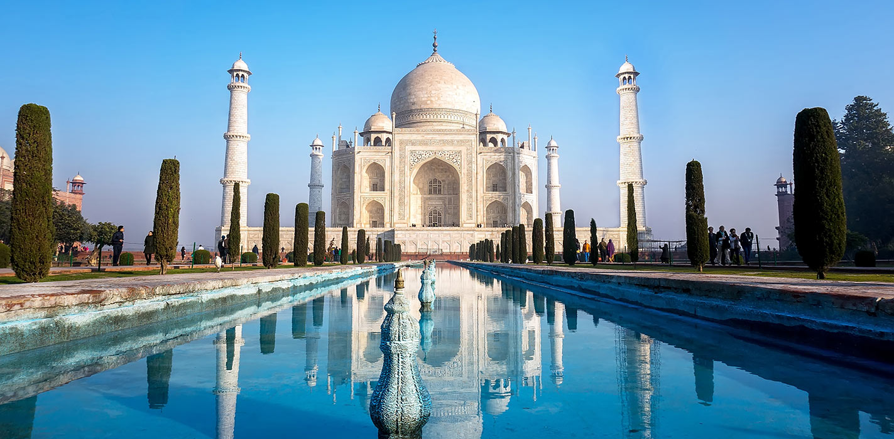
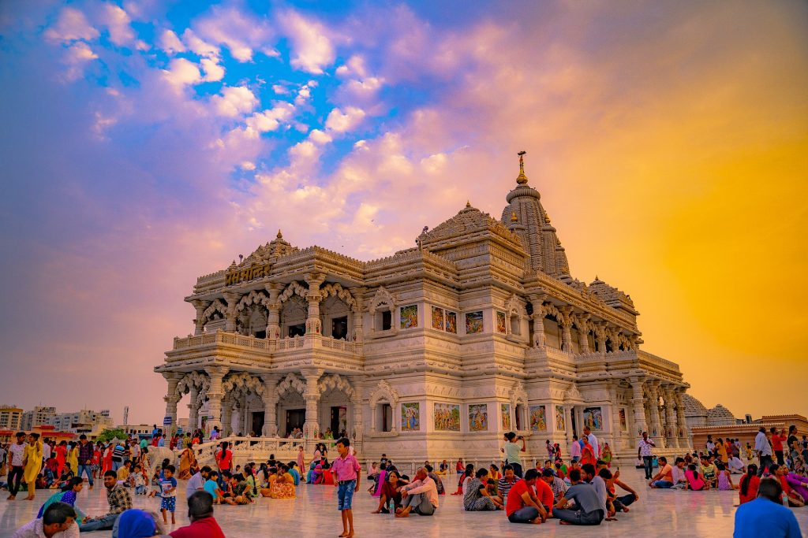

Agra

Varanasi

Vrindavan
UTTAR PRADESH
Amazing!! Heritage Grand Experiences
Uttar Pradesh conjures an image of acres and acres wide swaying fields; ancient Hindu temples on the bank of meandering rivers; and towns and cities with narrow alleys where a rich culture inhabits. Home to one of the world’s ancient most cities, and that of the iconic Taj Mahal; the origin place of two most prominent religions as well as of one of the important classical dance forms in India, Uttar Pradesh in North India is an unmissable holiday destination.For heritage tour, architecture, Hindu pilgrimage, wildlife tour, birdwatching, cultural tour, handicraft and art, food tour, shopping, chikankari and brass work, Buddhist pilgrimage, Jain pilgrimage, Christian pilgrimage, and for sighting the iconic Taj Mahal.
Most visited places in Uttar Pradesh